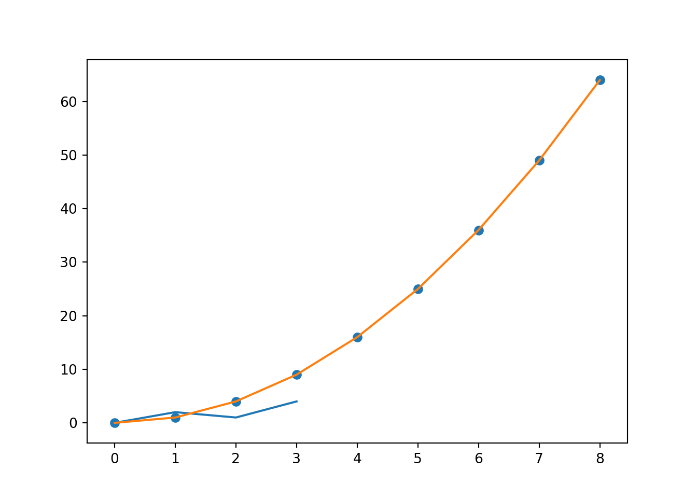
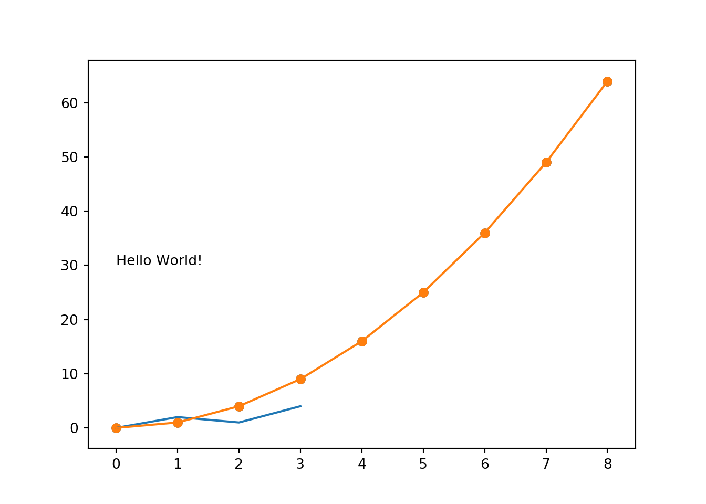
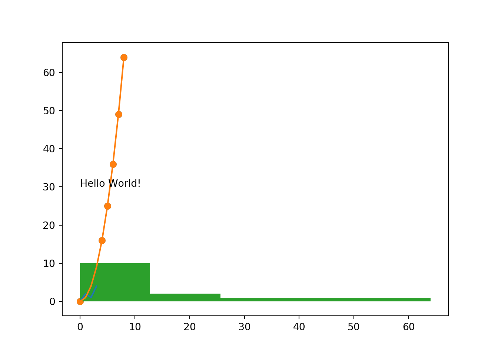

8 Visualisation
Visualisation in Python is a bit of a mixed bag, with techniques ranging all the way from “just as bad as base R” to “could one day get close to ggplot2”.
8.1 Matplotlib
matplotlib has a sub-package called pyplot, and you will conventionally import this package as plt.
import matplotlib.pyplot as pltWhen building plots with Matplotlib, you need to explicitly call plt.show() to print the plot to the console. If you want to clear the plot and start again you can use plt.clf().
8.2 Line Plot
For a simple line plot, you can use plt.plot(x, y) where x and y are the arrays/lists corresponding to the data points for the x and y axes.
import matplotlib.pyplot as plt
x_val = [0,1,2,3,4,5,6,7,8]
y_val = [0,1,4,9,16,25,36,49,64]
plt.plot(x_val, y_val)
plt.show()8.3 Scatter Plot
Scatter plots are basically the same syntax as line plots, but with use the method plt.scatter().
import matplotlib.pyplot as plt
x_val = [0,1,2,3,4,5,6,7,8]
y_val = [0,1,4,9,16,25,36,49,64]
plt.scatter(x_val, y_val)
plt.show()
Additional arguments include:
swhich gives the size of each pointcwhich gives the colour of each pointalphawhich gives the opacity of each point
8.4 Text
You can add text to plots using the plt.text() function.
import matplotlib.pyplot as plt
x_val = [0,1,2,3,4,5,6,7,8]
y_val = [0,1,4,9,16,25,36,49,64]
plt.scatter(x_val, y_val)
plt.text(0, 30, "Hello World!")
plt.show()
8.5 Histograms
Histograms are fairly straight-forward too: plt.hist(x, bins).
import matplotlib.pyplot as plt
x = [0,1,2,3,4,5,6,7,8,9,16,25,36,49,64]
plt.hist(x, 5)
plt.show()
8.6 Modifiers
8.6.1 Scales
plt.xscale('log')converts the x scale to a logarithmic scaleplt.yscale('log')plt.grid(True)displays the grid on the plotplt.yticks([0,1,2,3], ["0", "1B", "2B", "3B"])sets the Y axis ticks to the values given in the first argument, and sets the displayed strings on those ticks based on the second argumentplt.xticks([1000, 10000, 100000], ['1k', '10k', '100k'])
8.6.2 Labels
plt.xlabel('Year')sets the X axis label to “Year”plt.ylabel('Population')plt.title('World Population Projections')sets the title of the plot